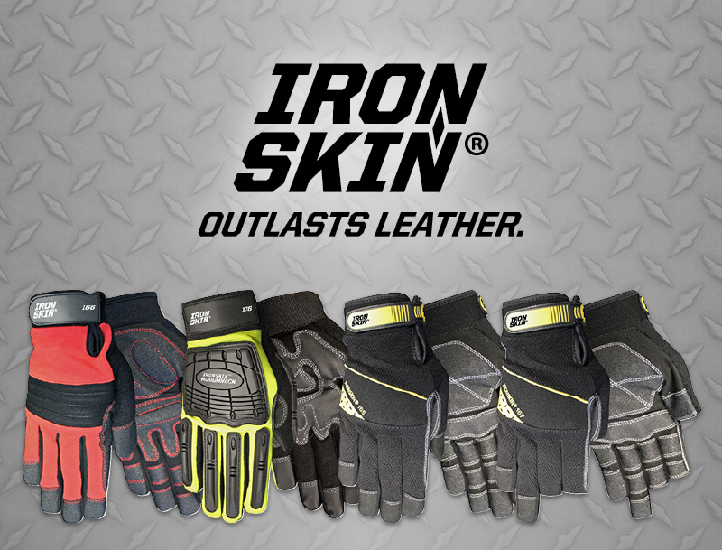
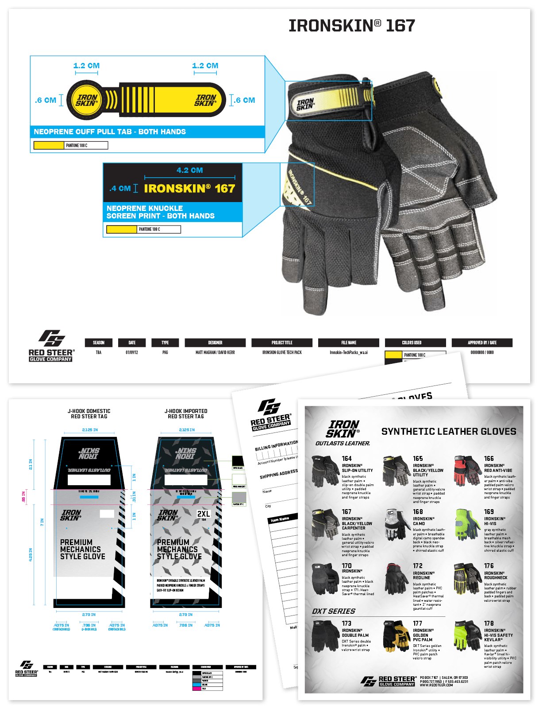
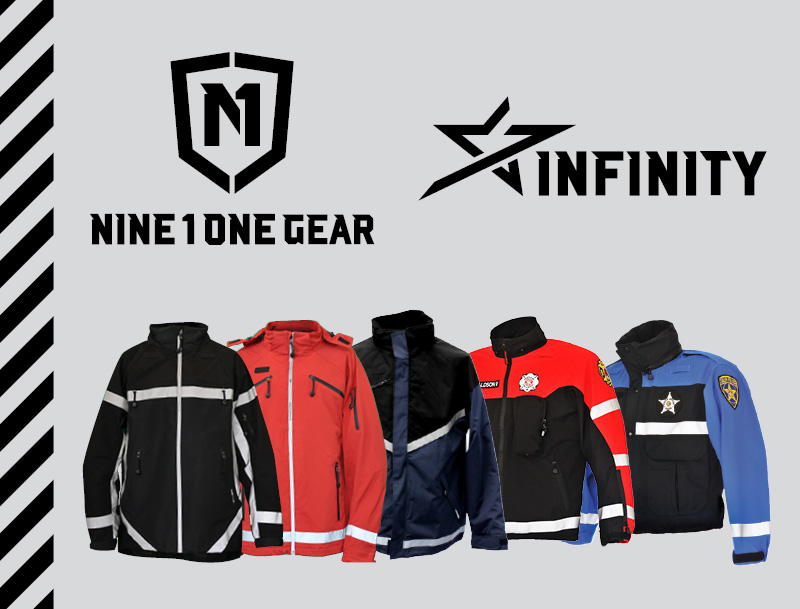

Tougher Than Leather
Ironskin gloves are synthetic working gloves, targeted largely toward mechanics, carpenters, and machinists. Drawing from the pattern on diamond plate steel, the logo indicates toughness and durability.

Nuts & Bolts
Product mockups, production spec sheets, tags, order sheets, and promotional materials were all designed to follow the Ironskin brand.

Built for Heroes
The Nine 1 One Gear rebrand focused on the character of the professionals who wear their products. Visually drawing from the ideals of protection and service inherent in their work, the brand mirrors the strength and boldness seen in both the product and those who wear it.